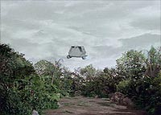
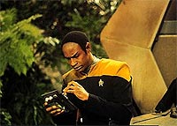
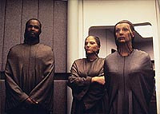
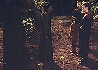
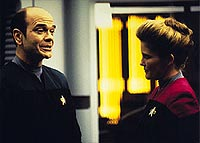
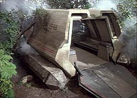
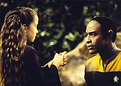

|
MANCHETE
DO EPISDIO
Tuvok tem a chance de dar uma de papai
e nos mostrar o "Vulcan Way of Life"
Episódio
anterior | Prximo
episódio
Sinopse:
Data Estelar: 49578.2.
 Ao
entrar na atmosfera de uma lua desabitada, a nave auxiliar pilotada
pelo tenente Tuvok e o alferes Bennet atingida por uma turbulncia
eletrodinmica e cai. Bennet morre, mas Tuvok logo percebe que no
está sozinho, quando trs crianas assustadas saem de um
esconderijo. Elas contam a ele que sua nave também caiu, matando
aqueles que tomavam conta delas. Enquanto isso, a Voyager recebe
Alicia, representante dos Drayans, com quem a capitã Janeway espera
negociar os minerais de que sua nave precisa. A visita
interrompida quando a visitante e sua comitiva recebem uma mensagem
de emergência. Antes de partir, no entanto, pede que a tripulao
deixe a regio, respeitando os costumes locais.
 Enquanto
Tuvok tenta consertar sua nave auxiliar, as crianas --Tressa,
Elani e Corin-- expressam seus receios de serem mortas por uma
criatura a que chamam de "morrok". Ficam ainda mais
assustadas quando um grupo de resgate Drayan aparece para procur-las.
Elas contam ao tenente que foram mandadas pelo seu próprio povo
para morrerem na lua e pedem ajuda para se esconderem.
Com a guarda de Tuvok, elas conseguem se esquivar da equipe de
busca. Mais tarde, Alicia informa Janeway que a nave desaparecida
havia sido encontrada na superfcie, a qual consideram um territrio
sagrado. A nativa ordena que a capitã remova o cadver do piloto e
abandone a área imediatamente.
 Na
manh seguinte, Tuvok descobre que Elani e Corin sumiram. Em uma
caverna nas proximidades, encontra suas roupas, mas no há sinal
das crianas. Em um intervalo na turbulncia atmosfrica, ele
consegue enviar uma breve mensagem Voyager. Janeway e Paris tomam
uma nave auxiliar para resgatar seu colega, mas so perseguidos por
um veculo Drayan, cujos ocupantes no querem permitir o
desembarque dos forasteiros no stio sagrado.
medida que a equipe de busca Drayan cerca Tuvok e Tressa, Janeway
e Paris chegam. O Vulcano se recusa a deixar que levem a criana,
mas fica surpreso quando Alicia revela que Tressa na verdade tem 96
anos. Nessa sociedade, o processo de envelhecimento reverso e a
garota no fora levada para ser morta, mas para falecer
naturalmente. Com a permissão de Alicia, Tuvok fica com Tressa para
confort-la em seus momentos finais.
Comentrios:
"Innocence"
apresentou uma história basicamente voltada para Tuvok. Embora j
tivesse sido mostrado que o Vulcano tinha filhos ("Elogium"),
um tanto estranho v-lo como uma figura paterna, dado o seu
"senso de humor" e "carisma"... Mas neste episódio,
pode-se ver o tipo de pai que ele deve ser --um bom pai.
 A
interao entre o tenente e as crianas desenrolou-se muito bem.
H muitos momentos especiais a serem lembrados. Entre eles, a
confiana e sensao de conforto que Tuvok passou s crianas
no incio do episódio, sua pacincia fenomenal enquanto
consertava a nave auxiliar e o afeto por Tressa, bastante evidente
no final da história.
No entanto, por incrvel que parea, em momento algum o personagem
perdeu sua lógica ou agiu de forma emocional. A atuao de Tim
Russ, como sempre, foi impecvel e, apesar da faixa etria, os
atores-mirins também convenceram (especialmente Tiffany Taubman).
Aps muito tempo houve uma evoluo no personagem de Russ, que
ultimamente andava esttico. Na cena inicial do episódio, em que o
alferes Bennet morre, o Vulcano estava at admiravelmente
compreensivo. Mais incrvel ainda foi ver que Tuvok canta (uma
curiosidade: Tim Russ msico e lanou recentemente um CD). As
vises sobre a cultura Vulcana também foram bem-vindas. O modo
como esse povo trata suas crianas e como elas crescem tem sido um
mistrio desde a época de Spock. Provavelmente, a instruo deve
basear-se na conversa aberta e tcnicas mentais aplicadas ainda
cedo.
 Como
no podia faltar em Voyager, houve as cenas de humor. O
Doutor, na tentativa de agradar os visitantes, acabou se bagunando
e se embaraando, e sua reação foi engraada (foi hilria também
a expresso no rosto da capitã). Da mesma forma, foi cmico o
relato da missão inicial de primeiro contato de Chakotay.
Em outra cena, quando Janeway e Paris deixam a Voyager na nave
auxiliar, também houve uma troca de comentários irnicos, o que
mostra o quanto o relacionamento desses dois evoluiu desde "Caretaker".
 Porm,
há algo a ser dito sobre a expectativa e nsia da capitã em
estabelecer contato com os Drayans. No pareceu muito uma
curiosidade cientfica ou diplomtica, mas uma oportunidade
potencial para obter suprimentos para a Voyager. Pelo menos, foi o
que pareceu durante o dilogo entre Janeway e Chakotay na
enfermaria.
Isso mostra que essa nave da Federao, diante de suas circunstâncias,
comeou a perder sua caracterstica original de explorao para
adaptar-se condio de "survivor" do quadrante Delta,
usando convenientemente as raas com quem encontra. A ideia pode no
ser muito bonita, mas mais realista.
 Tendo
dito isso, uma coisa questionvel no episódio foi a morte do
alferes Bennet no incio da história. estranho o modo como
todos encaram numa boa a perda de mais um colega, dada a situao
da nave. Ele pareceu mais um daqueles tripulantes de camisa vermelha
da Série Clássica, um luxo do qual a série no pode
desfrutar.
Citaes:
Corin - "Why are your
ears like that?"
("Por que suas orelhas so assim?")
Tuvok - "All Vulcans have similar shaped ears."
("Todos os Vulcanos tm as orelhas desta forma.")
Elani - "Do they make you hear better?"
("Elas fazem você ouvir melhor?")
Corin - "How are Vulcan children like?"
("Como so as crianas Vulcanas?")
Tuvok - "Well behaved."
("Bem comportadas.")
Trivia:
 Marnie McPhail (Alicia) j participou de outras produes de fico
cientfica. Esteve na série "Arquivo X", como Cami
Schroeder (no episódio "Arcadia"), e em "Sliders",
como Elizabeth Mallory (no episódio "Revelations"). Em Jornada,
participou do filme "Primeiro Contato" como Inge
Eiger, e no jogo "Star Trek: Borg" como a oficial ttico
alferes Anastasia Targus.
Marnie McPhail (Alicia) j participou de outras produes de fico
cientfica. Esteve na série "Arquivo X", como Cami
Schroeder (no episódio "Arcadia"), e em "Sliders",
como Elizabeth Mallory (no episódio "Revelations"). Em Jornada,
participou do filme "Primeiro Contato" como Inge
Eiger, e no jogo "Star Trek: Borg" como a oficial ttico
alferes Anastasia Targus.
Ficha
técnica:
História de Anthony Williams
Roteiro de Lisa Klink
Direo de James L. Conway
Exibido em 08/04/1996
Produção: 038
Elenco:
Kate Mulgrew como
Kathryn Janeway
Robert Beltran como Chakotay
Roxann Biggs-Dawson como B'Elanna Torres
Robert Duncan McNeill como Tom Paris
Jennifer Lien como Kes
Ethan Phillips como Neelix
Robert Picardo como Doutor
Tim Russ como Tuvok
Garrett Wang como Harry Kim
Elenco convidado:
Marnie McPhail como Alicia
Tiffany Taubman como Tressa
Sarah Rayne como Elani
Tahj D. Mowry como Corin
Richard Garon como Alferes Bennet
Episódio
anterior | Prximo
episódio
|